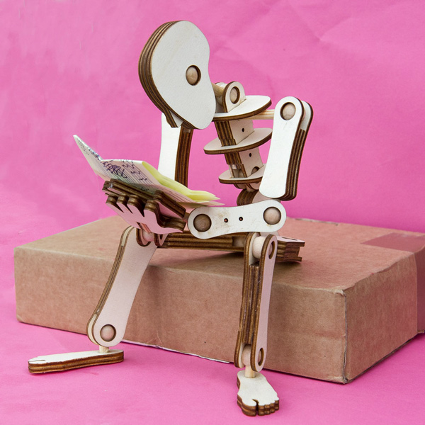
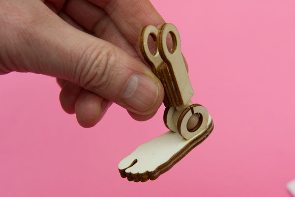
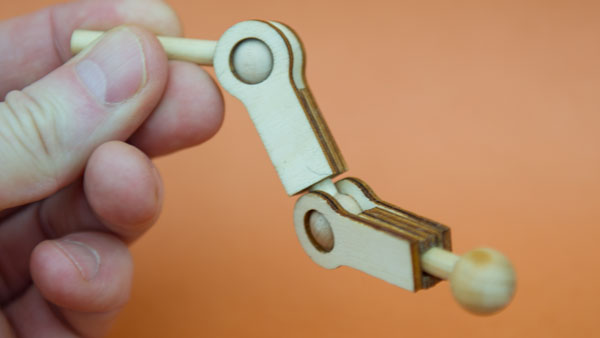
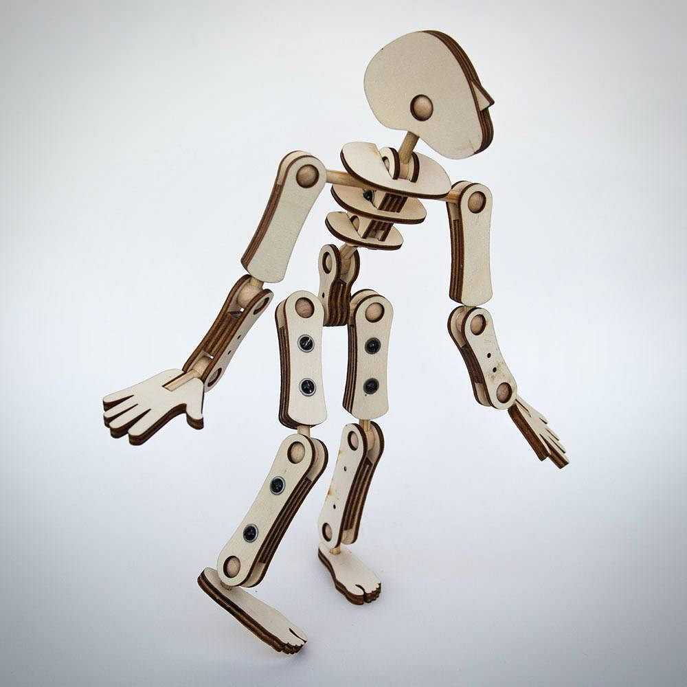
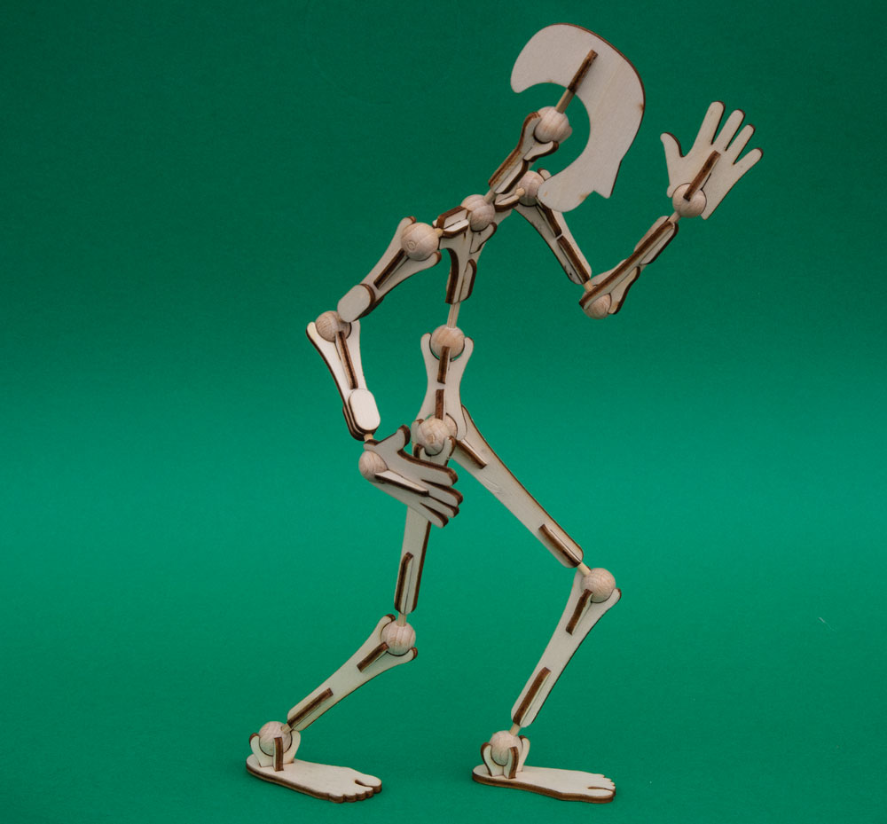

Assignment 7: Final Project Proposal

Concept / References:
For my final project, I want to create a poseable mannequin toy that could be used for stop-motion animation.
I was inspired by the work of Rob Ives and have decided to try to adapt his concept (without using any of his source files). Here's a blog post where he details some of his work that gave me the inspiration!
Here are some of his iterations:




So I love the idea behind this! I'm modifying it slightly to use 3D-printed beads, but will continue to use stock wooden dowels.
Here's my initial concept sketch + a bit of early math.

Breakdown of Tasks:
2D design: I will use Illustrator to design the laser-cut body parts (I have found it to work better for complex organic shapes)
3D CAD design + parameterization: I will use Rhino and Grasshopper to parametrically model the ball joints, allowing me to easily adjust both the outer radius and the inner cylinder radius.
3D printing: I will 3D print the ball joints.
Laser cutting: I will laser cut the body parts out of 3mm plywood.
Moving parts: I will connect the body parts together using the ball joints I create. These joints should be stiff enough to hold in place but moveable enough to modify the pose of the mannequin.
Timeline:
Due to some pre-existing work plans, I needed to get a bit of a head start on this assignment.
Wednesday, 5/22 - Order dowels, plywood, wood glue, super glue, and clamps from Amazon Prime and Lowe's. >> DONE
Friday, 5/24 - Design all body parts in Illustrator. Design 3D model and run test print to determine print time. >> DONE
Saturday, 5/25 - Laser-cut body parts. >> DONE
Sunday, 5/26 - Glue half of pieces together. 3D print the ball joints. >> DONE
Monday, 5/27 - Glue other half of pieces together. Contingency: reprint ball joints if not right size. >> DONE
Thursday, 5/30 - Glue entire mannequin together
Saturday, 6/1 - Documentation
Sunday, 6/2 through Wednesday, 6/5 - Contingency Days
Bill of Materials:
(200) 3mm wooden dowels (Amazon) - sourced on 5/23
(48) 3mm 12"x12" plywood sheets - sourced on 5/23
Wood glue (Lowe's) - sourced on 5/23
Gorilla glue (Lowe's), - sourced on 5/23
Assorted clamps (Lowe's), $14.99 - sourced on 5/23